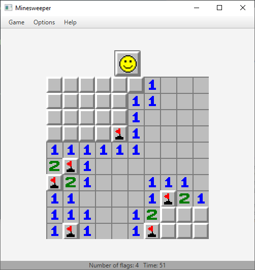

About JavaFX 8 Minesweeper
How to Run
Windows
Ensure first that you have JRE 8 installed on your computer. To do this, open Command Prompt, and type C:\path\to\java_home\bin\java -version, or if the path to your JRE installation is already in your PATH environment variable, simply type java -version. If the first line of output says java version "1.8.0_(build num)", then you are good to go. Otherwise, you will need to download and install JRE 8 on your computer; you can do so from the official Java website.
Next, download the executable .jar file from this repository. The .jar file contains the files needed to run the Minesweeper game on your JRE, but do not extract it. Once you have downloaded the minesweeper.jar file and placed it into your desired directory, cd into that directory and type java -jar minesweeper.jar. The Minesweeper game should launch in a separate window.
Shown below is a screenshot example of a Command Prompt session I did to illustrate these instructions. Note that the path to my JRE installation directory is on my PATH, and that the minesweeper.jar file is located in the C:\Users\kurus\Desktop\minesweeper directory on my computer.

Ubuntu
Work-in progress. See GitHub repo for temporary information for Linux in general.
Mac
While this should be able to run on Mac as is, using the java -jar minesweeper.jar command in Terminal in a similar manner as in Windows, I have not verified that it successfully runs on Mac. Feel free to email me (you can find my email here) if you run into any issues.
Design
MSModel interface
The crux of the project was realizing a representation for the Minesweeper grid with which the player interacts. At the lowest level, I use an interface defined in MSModel.java as a basis for the functionalities I saw necessary to include in the grid representation. The methods specified in this interface needed to serve the purpose of acquiring global state information of the grid -- dimensions, number of mines, and the like; modifying that global state -- through methods such as reveal; and finally obtaining information on the state of individual tiles in the grid -- isRevealed(), getNeighbouringMines(), isFlagged(), etc. I could have also used an abstract class instead of a Java interface, but it was easier for me to think of the set of fundamental functionalities as simply methods.
MinesweeperModel -- the heart of the project
The file MinesweeperModel.java contains a class MinesweeperModel which implements the previously mentioned interface MSModel. As such, it is perhaps the most important class of the entire project. In order to represent in totality the idea of the Minesweeper grid without actually specifying anything related to graphical output, MinesweeperModel makes use of an inner class called Cell, which enumerates a set of constants for each cell type, as well as the possible states in which that cell can be. Upon construction of a MinesweeperModel, a two-dimensional array of Cell is initialized with all BLANK cells. Information such as the dimensions of the grid and the number of mines must be passed into the constructor, as I use this to eventually load the grid with mined and numbered cells.
For actually making the grid based on the parameters numRows, numCols, and numMines, instead of using directly the numMines passed into the constructor, I use mine density. Making the grid this way provides a layer of protection against the user potentially providing a numMines that creates a difficult- or impossible-to-solve grid. If the user gives a numMines that would make the mine density higher than 90%, the mine density is trimmed to 90% forcibly. Outside of initially making the grid, mine density is not used, and numMines is used directly (according to its adjusted value from the mine density if applicable). The number of flags available is also set according to the adjusted numMines.
The make() method accomplishes making the grid. Using the adjusted value for numMines, it sets randomly chosen Cells to MINEs, if that cell isn't already a MINE. make() also takes into account passed in parameters corresponding to a grid location; using this passed-in grid location, make() will "reroll" a Cell at which a MINE is to be placed if the previously randomly chosen Cell happens to be that designated grid location. In terms of performance, simply rerolling a grid location for a MINE to be placed is not a very robust way of making the Minesweeper grid, especially for higher-density grids. Later I will address this issue. After having allocated numMines mines to the grid, the remaining Cells will be appropriately assigned to a number-valued Cell or a BLANK, corresponding to how many MINEs neighbour that Cell. In fact, another one of the methods from the MSModel interface, getNeighbouringMines(), assists in dong this. Finally, all cells are assigned appropriate states using setRevealed(), setFlagged(), and setQuestionMarked() (all of which have false for each Cell to start out).
Perhaps the last vital, non-trivial method in the MinesweeperModel class is the reveal() method. It recursively reveals the Cell at the passed-in grid location (by setting that Cell's revealed state to true. The recursion works like this:
- if the location to reveal is out of bounds, then nothing happens.
- otherwise, if the location to reveal is already revealed, then nothing happens.
- otherwise:
- set the
Cell's reveal state at that location totrue - if the
Cellat that location is aMINE, inform theMinesweeperModelthat the grid is in a lose state. - if the
Cellat that location is aBLANK, recursively callreveal()on allCells immediately neighbouring thisCell.
And that's all! Recursion enables the reveal() method to have a relatively simple implementation. Note that reveal() had a condition for setting the game state of the MinesweeperModel to lose. There is also a method for checking if the grid is in a winning game state: isGameWon(). This method iterates through each Cell in the grid, and will return true unless there is a MINE Cell whose reveal state is true (which is a losing game state) OR there is still a non-MINE Cell whose reveal state is not yet true, which isn't a losing game state, but not quite a winning game state either. These are the kinds of things MinesweeperModel will keep track of.
In short, MinesweeperModel is an implementation of an interface, free of any relation to a corresponding tangible (graphical, for example) representation of a Minesweeeper grid, containing information about each of its Cells, as well as being capable of properly initializing, modifying, and reporting information about its own state. Combined with a separate module that provides user-level functionality that can interact with the MinesweeperModel as changes in the game occur, it is the foundation for a highly robust and cohesive, object-oriented-compliant system to run the game of Minesweeper.
About Stock Price Analysis Dashboard
You can read about the stock price analysis dashboard web app on its GitHub Repository.